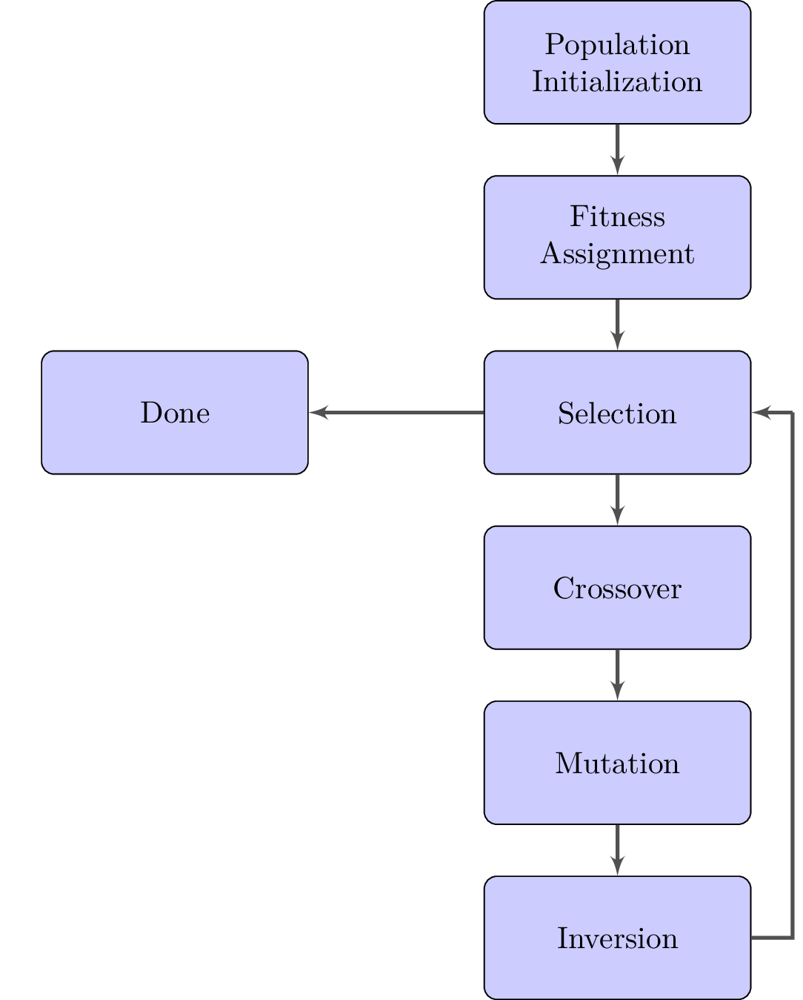

\documentclass{standalone}
\usepackage[margin=1.0in]{geometry}
\usepackage{tikz}
\usetikzlibrary{arrows,shapes,positioning}
\begin{document}
\tikzstyle{decision}=[diamond, draw, fill=yellow!20,
text width=4em, text badly centered, node distance=3cm,
inner sep=0pt]
\tikzstyle{block}=[rectangle, draw, fill=blue!20,
text width=8em, text badly centered, rounded corners,
minimum height=4em]
\tikzstyle{line}=[draw, very thick, color=black!75, -latex']
\tikzstyle{path}=[draw, very thick, color=black!75, -]
\begin{tikzpicture}[node distance=2cm, auto]
% Place nodes
\node [block] (pop_init) {Population Initialization};
\node [block, below of=pop_init] (fit_ass)
{Fitness Assignment};
\node [block, below of=fit_ass] (selection)
{Selection};
\node [draw=none, right of=selection] (pointer)
{};
\node [block, below of=selection] (crossover)
{Crossover};
\node [block, below of=crossover] (mutation)
{Mutation};
\node [block, below of=mutation] (inversion)
{Inversion};
\node [block, left = 2cm of selection] (done)
{Done};
% Draw edges
\path [line] (pop_init) -- (fit_ass);
\path [line] (fit_ass) -- (selection);
\path [line] (selection) -- (crossover);
\path [line] (crossover) -- (mutation);
\path [line] (mutation) -- (inversion);
\path [path] (inversion) -| (pointer.center);
\path [line] (pointer.center) -- (selection);
\path [line] (selection) -- (done);
\end{tikzpicture}
\end{document}Created by David Li